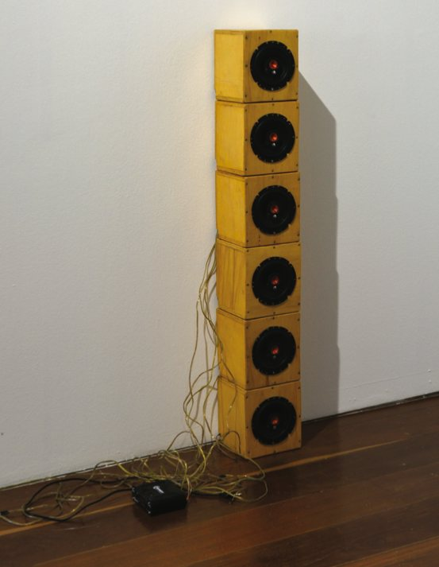
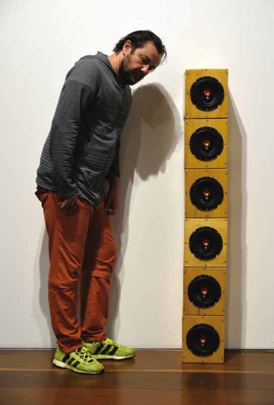

Histórias Anônimas
Use headphones
Sound installation with an amplified speaker on a tripod, fictional recordings and field recordings, dedicated to the anonymous workers who built the city. Shown in the group exhibition Espaços do Ainda, curated by Luiz Cláudio da Costa, at the Paço Imperial, Rio de Janeiro (2022), and at the Centro Cultural São Paulo (2023).
What if Rua do Ouvidor were called Maria das Dores
What if Rua do Senado were called João da Silva
What if Presidente Vargas were called João Cândido
What if every street belonged to the Silvas and the Santos
What if the city remembered its bodies
What would it say
- Materials
- Amplified loudspeakers on a stand, fictional recordings and field recordings
- Dimensions
- 3 × 2 × 1.80 m; 3 min 45 s. Version as a column of handmade wooden speaker boxes: 160 × 20 cm
- Venue
- Paço Imperial, Rio de Janeiro (2022); Centro Cultural São Paulo (2023)
- Group exhibition
- Espaços do Ainda (2022)
- Group exhibition
- Espaços do Ainda (2023)

